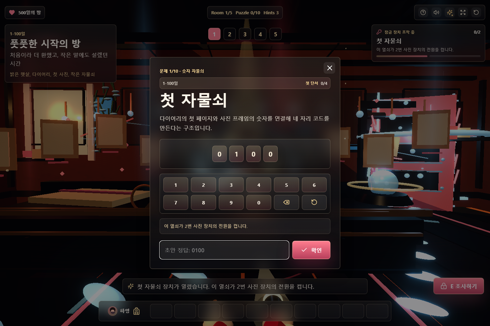
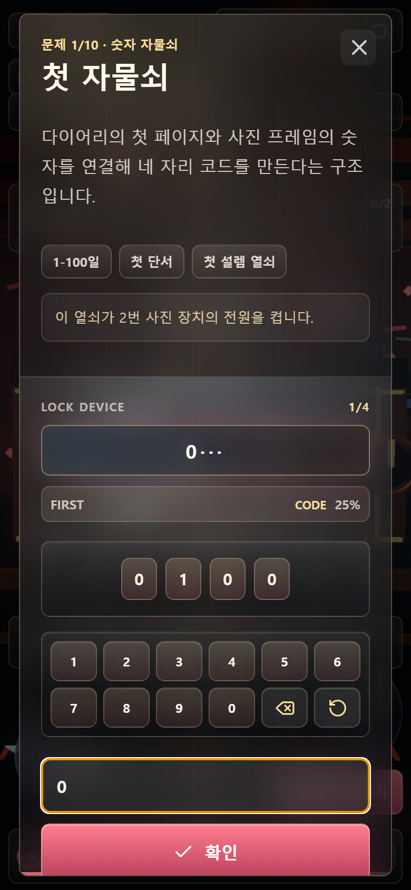

Lock Console UI Quick References
Hayoung500 첫 퍼즐 모달을 단순 카드에서 실제 방탈출 장치처럼 보이는 2구역 콘솔로 업그레이드한 패스입니다. Lazyweb 검색은 mission briefing overlay dark game UI, sci fi control panel modal, lock puzzle game UI 흐름을 참고했습니다.



Reference Signals
- 다크 미션 브리핑 화면은 배경을 유지한 채 모달이 장면 위에 올라오는 구조가 몰입을 유지했습니다.
- SF 컨트롤 패널 계열은 상단 장치명, 수치 readout, 진행 rail을 분리해 입력 상태를 즉시 읽게 했습니다.
- 퍼즐 게임 화면들은 현재 퍼즐, 진행률, 명확한 확인 액션을 계속 노출해 플레이어가 다음 행동을 헷갈리지 않게 했습니다.
Implemented Changes
- 문제 설명을 좌측 case file로 분리하고 날짜, 연계 상태, 보상 clue chip을 추가했습니다.
- 우측에 LOCK DEVICE readout, answer progress strip, kind/status rail, tactile keypad를 묶었습니다.
- 모바일에서는 grid를 1열로 접고 readout/button 크기를 유지해 실제 입력 흐름이 깨지지 않게 했습니다.
render_game_to_text()와scripts/verify-game.mjs에 lock-console UX 메타데이터를 추가했습니다.
다음 패스에서는 정답 성공 시 shackle/bolt 애니메이션과 모달 내부 readout 섬광을 더 강하게 연결하면
"자물쇠를 풀었다"는 손맛이 더 좋아질 것입니다.